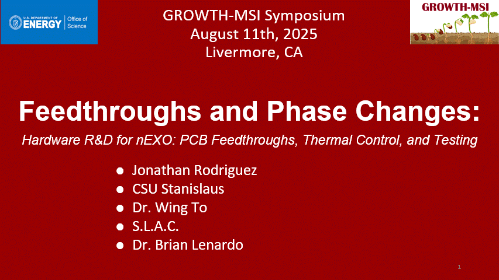
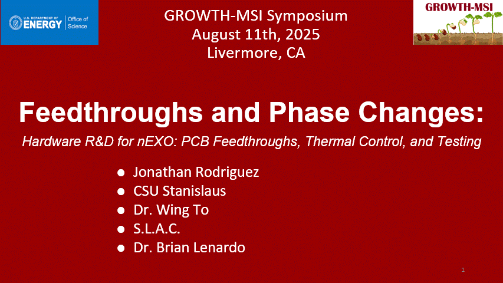

Summer Research Intern · nEXO Collaboration (SLAC, 2025)
Joined the nEXO detector R&D group as a McNair and Cal-Bridge scholar, focusing on PCB-based feedthrough studies for neutrinoless double beta decay instrumentation.
- Practiced PCB layout, impedance matching, and micro-component soldering for prototype boards.
- Modeled mounting hardware and component constraints in SolidWorks and Fusion 360.
- Documented measurements and design decisions to support detector component reviews.
SLAC
PCB Design
Impedance Matching
CAD